Coloring by symmetry
Pick a subgroup of a solid's symmetry, and the app can turn it into color four different ways. Each answers a different question, each has classical pictures it exists for — and every example on this page opens in the live app with one click, already set up.
The four questions a subgroup can answer
Fix the polyhedron's symmetry group G and choose a subgroup H from the coloring menu, in the Construction section under symmetry — beside the stellation symmetry, and deliberately independent of it. Then pick a reading in Coloring › face colors. Then:
- By cosets — which copy of the sub-figure is this? The pieces fall into [G:H] classes, the translates of one H-symmetric sub-figure. This is the compound coloring: one color per tetrahedron, per octahedron, per cube. Choose by subgroup coset, then what wears it in the applied menu beside it: per plane (whole face planes match — the classical plates), per facet (single pieces of surface — needed whenever one plane carries parts of two components), or per split facet (see below).
- By subgroup orbits — what does H itself preserve? Two pieces share a color exactly when some motion of H carries one to the other. This exists for every subgroup, never grays, and its smallest classes are the sub-figures H holds invariant. Choose by subgroup orbit; its applied menu offers per plane, per facet and per cell — the cell being the piece a model painter actually holds.
- Blends happen on their own, inside the coset modes: a piece that no single coset can name, but a small set can, wears the mix of that set instead of gray.
- Per split facet goes one further: it cuts such a piece along its own mirror lines, and the halves take crisp colors — the classical "one face, two colors, parted by a mirror".
Two things to know before the pictures. The coloring belongs to the polyhedron symmetry, never the stellation symmetry — that one is only how you edit, and changing it never repaints. And the selection on screen steers the coloring where the group alone cannot decide: the twenty planes of the icosahedron carry the five-tetrahedra partition once per hand, and the figure you built chooses which. Saved documents keep the coloring, which is how every link below works.
Compounds: one color per component
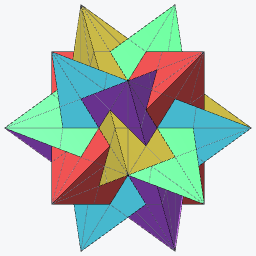
The five tetrahedra
The founding picture. The icosahedron's twenty face planes fall into five sets of four, each set the faces of a regular tetrahedron inscribed in the solid — so coloring by cosets of T in I paints the compound of five tetrahedra one color per tetrahedron, the way Escher colored his copy of Brückner's plate. Whole planes match, so per plane is all it takes.

The ten tetrahedra, by chiral pair
Add the other hand and the classical convention changes: five colors again, but now one per pair — each right-handed tetrahedron sharing its color with the left-handed one inscribed in the same cube, the two forming a stella octangula. The subgroup that stabilizes one such pair is the pyritohedral Th, and since each face plane now carries triangles of two different pairs, the coloring must go per facet.
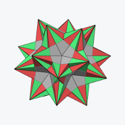
Right compound against left
Same figure, subgroup I — index two in Ih — and the ten tetrahedra separate into their two compounds of five: everything right-handed one color, everything left-handed the other. The cleanest chirality picture the app can draw.
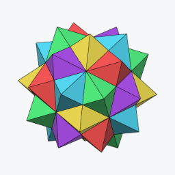
The five octahedra
Hess's compound of 1876, Wenninger's model 23 — and the picture that shows why per facet is its own mode rather than a copy of per plane. Every icosahedron plane carries a hexagram whose two triangles belong to two different octahedra, so no coloring of whole planes can separate the components. Per facet, with the compound selected, each octahedron wears its own of the five colors.
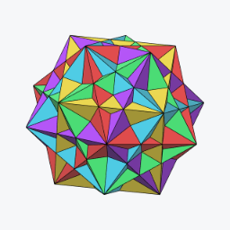
The five cubes
Cundy & Rollett's "Five Cubes in a Dodecahedron — ideally in five colors". As a stellation it lives in the rhombic triacontahedron, whose thirty face planes each carry exactly one cube's face — so here per plane works perfectly: five colors, six planes each, no gray. The subgroup is again Th, the stabilizer of one cube.
Model builders' conventions
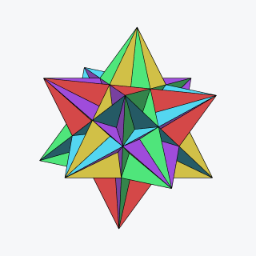
The five-color table, on the great icosahedron
Wenninger's multi-color icosahedral models keep one color per face plane, arranged so all five colors meet around every five-fold vertex — and that arrangement is the five-tetrahedra partition, applicable to any icosahedral stellation, not just the compound. Here it dresses the great icosahedron: every spike shows a fixed pattern of distinct colors, because the coloring is one global function of the plane.
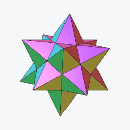
Opposite faces alike
Paper modelers like to cut both faces of an opposite pair from one sheet. Any subgroup containing the central inversion delivers exactly that: under D5d the dodecahedron's twelve planes pair antipodally into six colors — shown here on the small stellated dodecahedron. The same trick gives ten colors on icosahedral stellations (D3d) and fifteen on triacontahedral ones (D2h).
When the mirrors block the way
Under a full symmetry like Ih, every face plane is held by mirrors — and a chiral subgroup like T or I has none to offer, so no whole plane can honestly take a single coset color. The app has two answers.
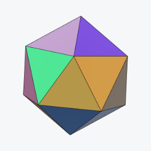
Twenty duotones: both compounds at once
The blend. Each icosahedron face lies in exactly one right-handed and one left-handed tetrahedron of the ten, so instead of graying, it wears the mix of those two coset colors — twenty distinct pastels, and both chiral compounds of five legible on a single solid. A picture the crisp coloring cannot draw at all.
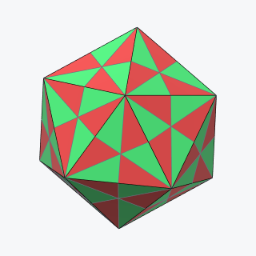
One face, two colors, parted by a mirror
The per split facet reading. A face grays because its own mirrors straddle the cosets; cut it along those very mirror lines and the sectors have no symmetry left to object — each takes a crisp color. Under Ih by cosets of I every face of the icosahedron splits into sectors alternating the two hands' colors, the classical two-tone face. The cut is purely visual: cells, selection and geometry are untouched.
Orbits: what the subgroup preserves
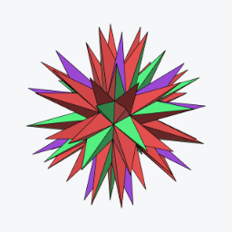
4 + 4 + 12: the invariant tetrahedra
Orbit coloring asks the other question. T acting on the twenty face planes has three orbits — two of four planes and one of twelve — and the two small ones are precisely the two tetrahedra T holds invariant. On the full echidnahedron they light up against everything else: not the compound coloring, but the "show me what this subgroup fixes" coloring, and it works for every subgroup with no gray ever.
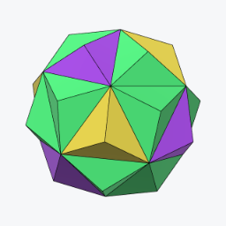
Cells a painter would match
Per cell, the orbit coloring paints whole solid pieces — the unit that gets one color of paint or one spool of filament. The first stellation's twenty cells fall into three orbits under T (4 + 4 + 12 again, one shell up), plus the core: four colors that tell you exactly which pieces of a physical model are interchangeable under that symmetry.
What gray means
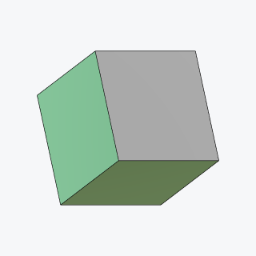
The cube under C4
Gray is never a failure — it is the coloring telling you something. A piece the whole subgroup holds still sits on the symmetry rather than being carried by it, and stays gray by instruction: under C4 the cube's two axis faces are exactly that. The four equatorial faces are the other case — no single coset can name them, but a pair can, so they blend. One small solid, both meanings on display.
There are exactly two reasons, and they are worth telling apart because only one of them is about sharing.
- The piece sits on the subgroup. If every element of H maps a plane to itself, H never carries it anywhere, so no coset owns it. The cube's axis faces under C4 are the example above; on the icosahedron under C3v(I) it is exactly two faces of the twenty — the pair perpendicular to that subgroup's own 3-fold axis, whose normal is the axis. Every other face takes a crisp color, so 18 of 20 come out named and 2 gray.
- The piece belongs to every coset at once. A blend of two or three colors says something; a blend of all of them averages the whole wheel to mud, so gray is the honest answer instead. The standard case is an index-2 subgroup: the icosahedron under Ih by cosets of I is entirely gray, every plane, because each face belongs to both hands equally. That is the picture the split-facet above exists to rescue.
Counted on the icosahedron's twenty face planes, polyhedron symmetry Ih, coloring per plane:
| Coloring subgroup | Index | Crisp | Blended | Gray | Why gray |
|---|---|---|---|---|---|
| I | 2 | 0 | 0 | 20 | belongs to every coset |
| Th, T, D5d, C5v, C2v, Ci, C5 | 5–60 | 0 | 20 | 0 | — |
| C3v(I) | 20 | 18 | 0 | 2 | sits on the subgroup |
| Cs | 60 | 0 | 16 | 4 | sits on the subgroup |
| E | 120 | 0 | 0 | 20 | sits on the subgroup |
The last row is the one that surprises. Under the trivial group the identity fixes everything, so every piece "sits on the subgroup" and the whole figure is gray — coset coloring has 120 colors available and can honestly award none of them. Orbit coloring is the mode that answers for every subgroup with no gray at all.
What wears the color changes the count. A facet can have a smaller stabilizer than the whole plane it lies in, so it can be named where the plane cannot. Under Ih by cosets of I, per plane is gray throughout; switch applied to per facet and, on the first three shells, 120 of 200 facets take crisp colors with 80 left gray; switch to per split facet and the cutting resolves those too.
The mix cosets colors switch. A blend is a color like any other, so on screen it reads as a facet somebody chose a muddy color for rather than as one the coloring cannot name. Turn mix cosets colors off — it sits beside the coloring menus — and every blended piece falls to gray as well, leaving only the crisply named pieces colored. On the icosahedron under Ih by cosets of T, where all twenty planes are blends, that is the difference between a figure of twenty pastels and a figure that is entirely gray: both are true, and the second is the one that says so.
The Colors panel names the mixes too. A coset reading gives every coset of H a row, whether or not the figure wears it, because a row's color is an ingredient: a facet showing a mix of two cosets takes its color from both, so changing either changes the picture. Each row therefore says what it is doing — N facets when it is worn on its own, with 5, 10 when it only ever appears blended and those are its partners, in N mixes when there are too many partners to fit (the tooltip lists them all), and unused here, dimmed, when this figure never mentions it.
The cube under C4 is the case worth opening the panel on. C4 has order four, so there are twelve cosets and twelve rows over a six-faced solid — but not one of them is worn alone: eight pair off across the four non-axis faces, reading coset 1 with 7, coset 3 with 9 and so on, and the remaining four are unused. Switch applied to per split facet and all twelve come into use at four facets each, with nothing left to annotate.
To read a mix back, rest the pointer on the facet: after a moment still, either view names the group along its own bottom edge — cosets 1 + 8 — with the mixed color and its members swatched beside the numbers. That is the only form the answer can take. A mix of three colors in Oklab is not three colors any more, and there is no table to lay them out in: the icosahedron alone reaches six- and ten-way mixes, hundreds of distinct combinations at once.
The palette itself never runs out: coset i wears … the golden angle around the color wheel, so two, five, ten or sixty classes stay tellable apart — and gray always means the same thing: no coset honestly fits.
Painting cosets by hand
The coset coloring is computed, and the computation has no taste: it knows which facets can share a color, not which ones you want to. Painting hands you the assignment — and it obeys the same law the coloring does. The brush works in both views: click a region of the diagram, or the facet itself on the solid — turning the solid stays a drag, and only a true click, one that has not travelled, is a stroke. Either way a click never paints one region: it paints the region’s entire orbit under the figure’s full symmetry, each copy taking the coset the chosen one becomes under that symmetry. Paint one face solid green, and every other face comes out solid in its own coset — the four-color model, made by hand, agreeing exactly with the per-plane reading. Which is worth knowing before you reach for a color: brushed with its own plane’s coset — read it off the per-plane coloring — a face comes out solid, while a coset the face’s own symmetries move around lands together with its images, and the face honestly shows them side by side. Painting a region with the label it already wears changes nothing anywhere, which is the sanity check the implementation is tested by: the brush and the coloring speak the same language.
And it is the label that is painted, not merely the color: the pointer readout names it, the exports carry it, and merge neighbors counts it in its majorities. shift-click adds the chosen coset to what a region wears — or takes it back out — and the addition propagates like everything else. A region carrying several cosets at once, by gesture or forced where a copy’s own symmetry straddles cosets, shows their Oklab blend and a small dot; with mix cosets colors off it falls to gray like every other shared piece. gray paints "no coset" (gray is fixed by every symmetry, so the whole orbit goes gray); auto erases a region and all its copies; clear takes everything back. While the brush is down, merge neighbors is set aside — its regions vote by majority, and a fresh paint inside one was simply outvoted, a dead-looking brush — and re-melts when you leave, painted labels included. Painted labels are saved with the document, and cleared when the coloring subgroup changes — they named that subgroup’s cosets — or when a different arrangement is built.
When per facet is too honest: merge neighbors
The per-facet readings are exact, and exactness has a price. On a figure whose faces are big flat regions of a few dozen facets, every facet wears precisely its own class — and inside one face the classes sit side by side in whatever order the enumeration dealt them, so the face reads as confetti. Nothing is wrong; there is simply more truth on screen than the eye can hold.
merge neighbors, beside the coloring menus, is the dial back toward legibility. Classes whose facets touch inside one face are melted together, smallest regions first, each absorbed into the neighbor it shares the most boundary with — so slivers vanish into their surroundings long before anything big is disturbed. The colors count says where to stop: at 1 every connected patch of surface goes solid — a face that was speckled red and green becomes simply red, because red is what most of it already wore — and raising the count lets the larger patterns back in, step by step, while the smallest shards stay merged. Both numbers in the readout count kinds, up to the figure’s full symmetry: 4 of 45 is four kinds of region kept of forty-five kinds of piece there were to merge.
Two things make the dial trustworthy. The merged regions still speak the palette’s language — each wears the label most of its own facets already had, majorities taken face by face, so the Colors panel’s rows, edited colors and the pointer’s readout all keep meaning what they meant, a four-coset figure melts to four colors rather than one, and the full merge degrades gracefully toward the per-plane picture. And the melting is symmetric at every stop: it runs on the quotient by the full symmetry group, so one step of the dial merges every copy of a face at once, and no setting can catch one face ahead of its twins. Even an exact tie — a region split half-and-half between two cosets — is worn symmetrically, as the blend of the tied labels (or gray, with mixing off), because any crisper choice would come out differently on different copies. Patches that never touch are never merged — the spikes of a compound meet only at points, and a point is not a boundary — which is why the count clamps at the number of patch-kinds rather than falling all the way to one.
An image on every face
Everything above assigns colors; texture, beside the merge dial, assigns a picture. One image is laid over the solid’s faces, replicated by the polyhedron’s full symmetry: each plane orbit keeps a single chart, drawn on one representative face and carried onto every other by a group element, so what lands on any face is an exact symmetric copy of what lands on the first — centered on the face’s own center, turned as the symmetry turns it, and mirrored where the element that carries it there is a reflection, because a reflected copy of a picture is its mirror image. The chart belongs to the plane, so the picture runs unbroken across a face’s facets, over every layer of the stellation alike, and out along the star’s wings, where the image simply repeats as a tile. scale sets the size of one tile in face widths.
How the image meets the colors is the blend. Under tint, the default, the image is multiplied under the face colors — sampled where the surface sits in the chart, then tinted by whatever the current coloring says there, and lit like any plain face. That one rule composes with everything on this page: by shell, each shell tints the picture its own way; by coset, each coset colorizes the same image in its own color, so a four-coset figure wears one pattern four ways; merge neighbors and the hand-painted labels change the tint exactly as they change the flat colors. It is why the bundled patterns are drawn light — white shows the group’s color pure, gray ink shades it, and a dark image would crush every coloring toward black. Under stamp the image instead lies over the face in its own colors, ordinary compositing — the mode for a picture that should keep its identity rather than lend its shape. And under replace the image is the face: its alpha becomes the surface’s, so where the picture is clear there is nothing there at all, and a glyph on a transparent ground hangs in the air, forty-eight symmetric copies deep.
The two layers are independent. The faces keep their palette — color and opacity per group, in the Colors panel as always — and the texture carries its own: an opacity dial for the whole layer, and an ink palette, a second color and opacity per group that the sampled image is multiplied by before it meets the face. The Colors panel gains an editing switch while a texture is armed — face colors or texture ink — and the ink rows default to white, no tint. Which is what makes the crossed picture possible: a solid red face carrying green arrows beside a solid green face carrying red ones, each layer colored by cosets, neither consulting the other. tile the image is the last dial: on, the image repeats endlessly over the wings, the right reading for a pattern; off, it exists exactly once per face, centered and clear beyond its edge, the right reading for an emblem — and under replace, one floating figure per face.
Transparency is honored in both blends. A transparent background leaves the face color exactly as it was — under tint the alpha fades the multiplier to one, under stamp it fades the cover to nothing — and semi-transparent pixels blend by their alpha. So a glyph drawn on a transparent ground, like the bundled arrow or the SVG figures, reads two ways: under tint its white fill vanishes into the coset color and the dark outline carries the shape, an engraving; under stamp the glyph pops in its own white, a sticker. Multiplication can only darken, which is why a white-filled glyph needs the stamp to be seen as white — and why both blends exist.
The images live in img/textures/ and the menu lists what
its index.json names; drop a file in the folder and rerun
node docs/tools/make-textures.mjs to include it. The
chosen file and scale are saved with the document — a reader
without this feature draws the same figure in plain colors.
All the recipes at a glance
| Picture | Solid · G · H | Mode | |
|---|---|---|---|
| Five tetrahedra, one color each | icosahedron · I · T | cosets, per plane | open |
| Ten tetrahedra, by chiral pair | icosahedron · Ih · Th | cosets, per facet | open |
| Right compound vs left | icosahedron · Ih · I | cosets, per facet | open |
| Five octahedra, one color each | icosahedron · I · T | cosets, per facet | open |
| Five cubes, one color each | triacontahedron · Ih · Th | cosets, per plane | open |
| Wenninger's five-color table | icosahedron · I · T | cosets, per plane | open |
| Opposite faces alike, six colors | dodecahedron · Ih · D5d(I) | cosets, per plane | open |
| Twenty duotones, both hands at once | icosahedron · Ih · T | cosets, per plane (blend) | open |
| Two colors parted by a mirror | icosahedron · Ih · I | cosets, per split facet | open |
| The invariant tetrahedra, 4+4+12 | icosahedron · Ih · T | orbits, per plane | open |
| Painter's matching cells | icosahedron · Ih · T | orbits, per cell | open |
| Honest gray, and a blend beside it | cube · Oh · C4 | cosets, per plane | open |
Every link opens a saved document: change anything afterward and it is yours to edit, save and export like any other. The controls page documents each mode in the panel's own terms, and the design report holds the mathematics — why gray is sometimes forced, what exactly blends, and where each scheme's limits are.
A JavaScript port of the Stellation applet written by Vladimir Bulatov between 1998 and 2001. See controls & views for the panel itself, and what changed for the current round of work.